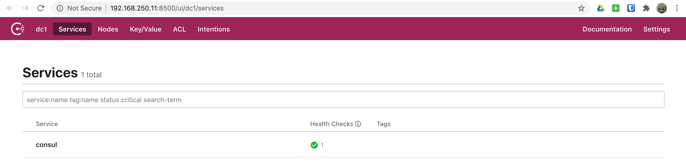
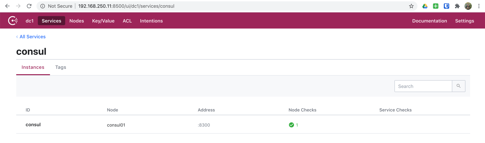
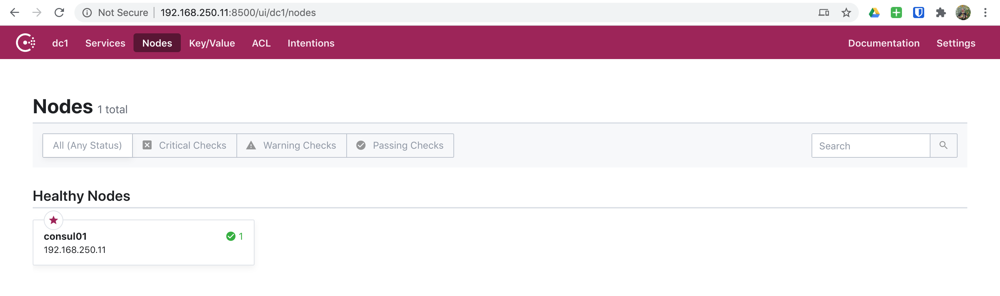
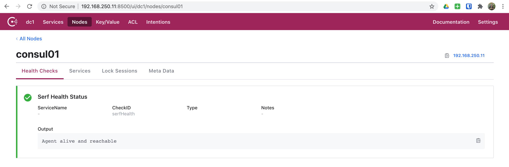

05. Consul - Single Node
In this scenario, we will simply spin up a single node Consul server which will provide us a learning environment to get familiar with basic Consul concepts.
Spinning Up
First we need to export our scenario configuration for Vagrant:
export SCENARIO=scenarios/consul.yml
Now that we've exported our scenario configuration, we are ready to spin up our environment:
vagrant up
And off we go! You will see a lot going on here as Vagrant and Ansible do their job.
▶ vagrant up
Bringing machine 'consul01' up with 'virtualbox' provider...
...
PLAY RECAP *********************************************************************
consul01 : ok=30 changed=13 unreachable=0 failed=0 skipped=22 rescued=0 ignored=0
And once all of the provisioning finishes, we will have a single node Consul server ready for us to explore.
Nodes
This scenario has the following nodes when completed.
| Node | IP #1 | IP #2 |
|---|---|---|
| consul01 | 192.168.250.11 |
CLI
Now we are ready to begin exploring our Consul server using the CLI. So, to do
this. Let's SSH into our consul01 node.
vagrant ssh consul01
▶ vagrant ssh consul01
Welcome to Ubuntu 18.04.4 LTS (GNU/Linux 4.15.0-76-generic x86_64)
* Documentation: https://help.ubuntu.com
* Management: https://landscape.canonical.com
* Support: https://ubuntu.com/advantage
Last login: Mon Jul 20 14:45:45 2020 from 10.0.2.2
vagrant@consul01:~$
Now that we've logged in, let's change into the /etc/consul.d directory and
see what files/directories are present.
cd /etc/consul.d
ls -la
vagrant@consul01:~$ cd /etc/consul.d
vagrant@consul01:/etc/consul.d$ ls -la
total 20
drwxr-xr-x 4 root root 4096 Jul 20 14:36 .
drwxr-xr-x 79 root root 4096 Jul 20 14:36 ..
drwxr-xr-x 2 root root 4096 Jul 20 14:36 client
-rw-r--r-- 1 root root 846 Jul 20 14:36 config.json
drwxr-xr-x 2 root root 4096 Jul 20 14:36 scripts
vagrant@consul01:/etc/consul.d$
CLI - Configuration
Let's first take a quick look at our Consul configuration while we're here.
cat config.json
vagrant@consul01:/etc/consul.d$ cat config.json
{
"acl": {
"default_policy": "allow",
"down_policy": "extend-cache",
"tokens": {
"agent": "",
"agent_master": "",
"default": "",
"master": "6DA12E0F-D8A5-48C5-AEFF-00D50E84D01A",
"replication": ""
}
},
"bind_addr": "192.168.250.11",
"bootstrap_expect": 1,
"client_addr": "0.0.0.0",
"data_dir": "/var/consul",
"datacenter": "dc1",
"dns_config": {},
"enable_acl_replication": false,
"enable_syslog": true,
"encrypt": "WWw4l0h1LbB4+pC5+VUWiV8kMBNQc+nEwt8OODMx2xg=",
"log_level": "DEBUG",
"node_name": "consul01",
"performance": {},
"primary_datacenter": "dc1",
"retry_join": [
"192.168.250.11"
],
"retry_join_wan": [],
"server": true,
"telemetry": {},
"ui": true
}
vagrant@consul01:/etc/consul.d$
And if we wanted to do a quick validation of our Consul configuration, we can do so by:
consul validate /etc/consul.d
vagrant@consul01:/etc/consul.d$ consul validate /etc/consul.d
Configuration is valid!
vagrant@consul01:/etc/consul.d$
CLI - Datacenters
Next, let's see what Consul datacenters exist:
consul catalog datacenters
vagrant@consul01:/etc/consul.d$ consul catalog datacenters
dc1
vagrant@consul01:/etc/consul.d$
We can also use curl to retrieve the same information:
curl --silent http://127.0.0.1:8500/v1/catalog/datacenters | jq
vagrant@consul01:/etc/consul.d$ curl --silent http://127.0.0.1:8500/v1/catalog/datacenters | jq
[
"dc1"
]
vagrant@consul01:/etc/consul.d$
CLI - Services
Next, let's check and see what services are available:
consul catalog services
vagrant@consul01:/etc/consul.d$ consul catalog services
consul
vagrant@consul01:/etc/consul.d$
We can also use curl to retrieve the same information:
curl --silent http://127.0.0.1:8500/v1/catalog/services | jq
vagrant@consul01:/etc/consul.d$ curl --silent http://127.0.0.1:8500/v1/catalog/services | jq
{
"consul": []
}
vagrant@consul01:/etc/consul.d$
CLI - Nodes
Next, let's get a list of nodes available:
consul catalog nodes
vagrant@consul01:/etc/consul.d$ consul catalog nodes
Node ID Address DC
consul01 290c5be7 192.168.250.11 dc1
vagrant@consul01:/etc/consul.d$
The command above gives us a simplistic view of our nodes, but if we'd like to get a more detailed view we can execute the following:
consul catalog nodes --detailed
vagrant@consul01:/etc/consul.d$ consul catalog nodes --detailed
Node ID Address DC TaggedAddresses Meta
consul01 290c5be7-7a03-7e9a-5db4-d87f912c1674 192.168.250.11 dc1 lan=192.168.250.11, lan_ipv4=192.168.250.11, wan=192.168.250.11, wan_ipv4=192.168.250.11 consul-network-segment=
vagrant@consul01:/etc/consul.d$
As you can see, the above command gives us a much better detailed view into our nodes.
We can also use curl to get the same information:
curl --silent http://127.0.0.1:8500/v1/catalog/nodes | jq
vagrant@consul01:/etc/consul.d$ curl --silent http://127.0.0.1:8500/v1/catalog/nodes | jq
[
{
"ID": "290c5be7-7a03-7e9a-5db4-d87f912c1674",
"Node": "consul01",
"Address": "192.168.250.11",
"Datacenter": "dc1",
"TaggedAddresses": {
"lan": "192.168.250.11",
"lan_ipv4": "192.168.250.11",
"wan": "192.168.250.11",
"wan_ipv4": "192.168.250.11"
},
"Meta": {
"consul-network-segment": ""
},
"CreateIndex": 5,
"ModifyIndex": 6
}
]
vagrant@consul01:/etc/consul.d$
And if we'd like to get detailed information for node consul01 using curl:
curl --silent http://127.0.0.1:8500/v1/catalog/node/consul01 | jq
vagrant@consul01:/etc/consul.d$ curl --silent http://127.0.0.1:8500/v1/catalog/node/consul01 | jq
{
"Node": {
"ID": "290c5be7-7a03-7e9a-5db4-d87f912c1674",
"Node": "consul01",
"Address": "192.168.250.11",
"Datacenter": "dc1",
"TaggedAddresses": {
"lan": "192.168.250.11",
"lan_ipv4": "192.168.250.11",
"wan": "192.168.250.11",
"wan_ipv4": "192.168.250.11"
},
"Meta": {
"consul-network-segment": ""
},
"CreateIndex": 5,
"ModifyIndex": 6
},
"Services": {
"consul": {
"ID": "consul",
"Service": "consul",
"Tags": [],
"Address": "",
"Meta": {
"raft_version": "3",
"serf_protocol_current": "2",
"serf_protocol_max": "5",
"serf_protocol_min": "1",
"version": "1.7.2"
},
"Port": 8300,
"Weights": {
"Passing": 1,
"Warning": 1
},
"EnableTagOverride": false,
"Proxy": {
"MeshGateway": {},
"Expose": {}
},
"Connect": {},
"CreateIndex": 5,
"ModifyIndex": 5
}
}
}
vagrant@consul01:/etc/consul.d$
We can also get the health of our consul01 node using curl:
curl --silent http://127.0.0.1:8500/v1/health/node/consul01 | jq
vagrant@consul01:/etc/consul.d$ curl --silent http://127.0.0.1:8500/v1/health/node/consul01 | jq
[
{
"Node": "consul01",
"CheckID": "serfHealth",
"Name": "Serf Health Status",
"Status": "passing",
"Notes": "",
"Output": "Agent alive and reachable",
"ServiceID": "",
"ServiceName": "",
"ServiceTags": [],
"Type": "",
"Definition": {},
"CreateIndex": 5,
"ModifyIndex": 5
}
]
vagrant@consul01:/etc/consul.d$
CLI - Datacenter Members
To get a list of Consul datacenter members, we can simply execute:
consul members list
vagrant@consul01:/etc/consul.d$ consul members list
Node Address Status Type Build Protocol DC Segment
consul01 192.168.250.11:8301 alive server 1.7.2 2 dc1 <all>
vagrant@consul01:/etc/consul.d$
Next let's take a look at consul01 information specifically.
consul info
vagrant@consul01:/etc/consul.d$ consul info
agent:
check_monitors = 0
check_ttls = 0
checks = 0
services = 0
build:
prerelease =
revision = 9ea1a204
version = 1.7.2
consul:
acl = disabled
bootstrap = true
known_datacenters = 1
leader = true
leader_addr = 192.168.250.11:8300
server = true
raft:
applied_index = 142
commit_index = 142
fsm_pending = 0
last_contact = 0
last_log_index = 142
last_log_term = 3
last_snapshot_index = 0
last_snapshot_term = 0
latest_configuration = [{Suffrage:Voter ID:290c5be7-7a03-7e9a-5db4-d87f912c1674 Address:192.168.250.11:8300}]
latest_configuration_index = 0
num_peers = 0
protocol_version = 3
protocol_version_max = 3
protocol_version_min = 0
snapshot_version_max = 1
snapshot_version_min = 0
state = Leader
term = 3
runtime:
arch = amd64
cpu_count = 1
goroutines = 81
max_procs = 2
os = linux
version = go1.13.7
serf_lan:
coordinate_resets = 0
encrypted = true
event_queue = 1
event_time = 3
failed = 0
health_score = 0
intent_queue = 1
left = 0
member_time = 3
members = 1
query_queue = 0
query_time = 1
serf_wan:
coordinate_resets = 0
encrypted = true
event_queue = 0
event_time = 1
failed = 0
health_score = 0
intent_queue = 0
left = 0
member_time = 1
members = 1
query_queue = 0
query_time = 1
vagrant@consul01:/etc/consul.d$
UI
Now that we've explored our Consul setup using some basic CLI commands, let's jump into the Consul UI.
Open your preferred browser of choice and head over to http://192.168.250.11:8500/ui
UI - Services
Click on services and you'll see we only have one service currently in Consul, which will look like below.

And if you click on the Consul service to dig in further, you'll see a bit
of information on our Consul service.

UI - Nodes
Next, let's click on nodes and we SHOULD only see our consul01 node listed.

Let's now click on consul01 and dig in a bit more on this node.

DNS
One of the beautiful things with Consul is that we have access to a DNS
interface. The DNS interfaces provides us with a way to perform various lookups
using normal DNS methods. This removes the need to use the API to do a lookup
of any kind. One thing to note here is: The Consul DNS interface listens on
port 8600 by default.
NOTE: We will explore options to get the DNS interface to become transparent to systems in a later excercise.
DNS - Node Lookups
One example of using the DNS interface is to lookup nodes and get a list of records available.
Let's see what DNS returns for our consul01 node.
dig @127.0.0.1 -p 8600 consul01.node.consul ANY
vagrant@consul01:/etc/consul.d$ dig @127.0.0.1 -p 8600 consul01.node.consul ANY
; <<>> DiG 9.11.3-1ubuntu1.11-Ubuntu <<>> @127.0.0.1 -p 8600 consul01.node.consul ANY
; (1 server found)
;; global options: +cmd
;; Got answer:
;; ->>HEADER<<- opcode: QUERY, status: NOERROR, id: 53553
;; flags: qr aa rd; QUERY: 1, ANSWER: 2, AUTHORITY: 0, ADDITIONAL: 1
;; WARNING: recursion requested but not available
;; OPT PSEUDOSECTION:
; EDNS: version: 0, flags:; udp: 4096
;; QUESTION SECTION:
;consul01.node.consul. IN ANY
;; ANSWER SECTION:
consul01.node.consul. 0 IN A 192.168.250.11
consul01.node.consul. 0 IN TXT "consul-network-segment="
;; Query time: 1 msec
;; SERVER: 127.0.0.1#8600(127.0.0.1)
;; WHEN: Mon Jul 20 19:50:35 UTC 2020
;; MSG SIZE rcvd: 101
vagrant@consul01:/etc/consul.d$
DNS - Service Lookups
We can also use Consul to perform service lookups. The context of a service
lookup looks like: [tag.]<service>.service[.datacenter].<domain>. The tag
is an optional field that can be used to find a specific tag when services may
be named the same but are used for entirely different things.
For example, we may have multiple db services registered. But we could use
tags to delineate between development and production. So, any application
for development could find it's db service by using development.db.service.consul.
Also, the datacenter is optional unless you need to find a service outside of
your Consul agent's default Consul datacenter. So, if you are looking for a
service in the same Consul datacenter, you can skip the datacenter portion. Otherwise, you can add the datacenter to find a service in another Consul
datacenter.
Seeing as we don't have any services registered at this point, we will just use
the default consul service to perform an example DNS service lookup.
dig @127.0.0.1 -p 8600 consul.service.consul
vagrant@consul01:/etc/consul.d$ dig @127.0.0.1 -p 8600 consul.service.consul
; <<>> DiG 9.11.3-1ubuntu1.11-Ubuntu <<>> @127.0.0.1 -p 8600 consul.service.consul
; (1 server found)
;; global options: +cmd
;; Got answer:
;; ->>HEADER<<- opcode: QUERY, status: NOERROR, id: 5946
;; flags: qr aa rd; QUERY: 1, ANSWER: 1, AUTHORITY: 0, ADDITIONAL: 1
;; WARNING: recursion requested but not available
;; OPT PSEUDOSECTION:
; EDNS: version: 0, flags:; udp: 4096
;; QUESTION SECTION:
;consul.service.consul. IN A
;; ANSWER SECTION:
consul.service.consul. 0 IN A 192.168.250.11
;; Query time: 0 msec
;; SERVER: 127.0.0.1#8600(127.0.0.1)
;; WHEN: Mon Jul 20 20:06:08 UTC 2020
;; MSG SIZE rcvd: 66
vagrant@consul01:/etc/consul.d$
DNS - systemd-resolved
Oh my! systemd-resolved What a pain. However, we can work around this
relatively easy and not disable it. Many times I have opted to just disable
systemd-resolved and install Dnsmasq and move on. But for this learnining
we will install Dnsmasq, reconfigure systemd-resolved to forward
to Dnsmasq, and configure Dnsmasq to forward the consul domain to our
Consul client's DNS port.
We will be doing this on all of our servers within our stack to ensure they are all consistent. As well as, properly resolve services registered in Consul without the need to do specific work arounds for various things such as: NGINX, etc. The benefit will be to understand how we can leverge Consul in any environment. To easily reach our services without load balancers, etc. For example, we might have an NGINX web server configured as a reverse proxy for many different sites within our environment. Think of our NGINX reverse proxy functioning as a form of an application gateway. We could frontend our application gateways with an external load balancer, which sends all HTTP(s) traffic to our application gateways. Then our application gateways can make decisions based on the URL, to properly redirect to our applications. The point here is that we could easily just define resolvers for NGINX, but that wouldn't solve OS level DNS resolution for services such as logging, etc.
So, what does this look like after we provision our servers? Let's jump in and take a look.
vagrant ssh consul01
Next, let's look at our systemd-resolved configuration and then Dnsmasq.
cat /etc/systemd/resolved.conf
vagrant@consul01:~$ cat /etc/systemd/resolved.conf
# This file is part of systemd.
#
# systemd is free software; you can redistribute it and/or modify it
# under the terms of the GNU Lesser General Public License as published by
# the Free Software Foundation; either version 2.1 of the License, or
# (at your option) any later version.
#
# Entries in this file show the compile time defaults.
# You can change settings by editing this file.
# Defaults can be restored by simply deleting this file.
#
# See resolved.conf(5) for details
[Resolve]
DNS=127.0.0.2
#FallbackDNS=
#Domains=
#LLMNR=no
#MulticastDNS=no
#DNSSEC=no
#Cache=yes
#DNSStubListener=yes
vagrant@consul01:~$
The important thing from above is the line DNS=127.0.0.2. This is telling
systemd-resolved to forward all lookups to 127.0.0.2 which is what IP
Dnsmasq is bound to.
And if we take a quick look at /etc/dnsmasq.conf we can verify that is correct
as well.
cat /etc/dnsmasq.conf
vagrant@consul01:~$ cat /etc/dnsmasq.conf
bind-interfaces
port=53
listen-address=127.0.0.2
server=/consul/127.0.0.1#8600
# Uncomment and modify as appropriate to enable reverse DNS lookups for
# common netblocks found in RFC 1918, 5735, and 6598:
#rev-server=0.0.0.0/8,127.0.0.1#8600
#rev-server=10.0.0.0/8,127.0.0.1#8600
#rev-server=100.64.0.0/10,127.0.0.1#8600
#rev-server=127.0.0.1/8,127.0.0.1#8600
#rev-server=169.254.0.0/16,127.0.0.1#8600
#rev-server=172.16.0.0/12,127.0.0.1#8600
#rev-server=192.168.0.0/16,127.0.0.1#8600
#rev-server=224.0.0.0/4,127.0.0.1#8600
#rev-server=240.0.0.0/4,127.0.0.1#8600
vagrant@consul01:~$
And as you can see, we have configured listen-address=127.0.0.2 and
bind-interfaces to ensure that Dnsmasq only listens on that IP. We have also
added server=/consul/127.0.0.1#8600 which tells Dnsmasq to forward all consul
domains to thee local Consul client's DNS port(8600).
Now let's verify that our DNS resolution is working properly to find registered services in Consul.
dig consul.service.dc1.consul
vagrant@consul01:~$ dig consul.service.dc1.consul
; <<>> DiG 9.11.3-1ubuntu1.11-Ubuntu <<>> consul.service.dc1.consul
;; global options: +cmd
;; Got answer:
;; ->>HEADER<<- opcode: QUERY, status: NOERROR, id: 60558
;; flags: qr rd ra; QUERY: 1, ANSWER: 1, AUTHORITY: 0, ADDITIONAL: 1
;; OPT PSEUDOSECTION:
; EDNS: version: 0, flags:; udp: 65494
;; QUESTION SECTION:
;consul.service.dc1.consul. IN A
;; ANSWER SECTION:
consul.service.dc1.consul. 0 IN A 192.168.250.11
;; Query time: 3 msec
;; SERVER: 127.0.0.53#53(127.0.0.53)
;; WHEN: Tue Jul 21 17:02:35 UTC 2020
;; MSG SIZE rcvd: 70
vagrant@consul01:~$
KV Store
The Consul KV store is another core feature of Consul. The KV store allows users to store indexed objects for various usages. The KV store is also a simple one that is not intended to replace a full featured KV datastore.
The KV store does have an object size limitation of 512KB. Otherwise there
are not any restrictions to its usage.
KV Store - Examples
To get familiar using the KV store, we will walk through some basic examples.
KV Store - Examples - Put
First, let's create a few KV pairs:
consul kv put users/example/username example
vagrant@consul01:/etc/consul.d$ consul kv put users/example/username example
Success! Data written to: users/example/username
vagrant@consul01:/etc/consul.d$
consul kv put users/example/email example@example.org
vagrant@consul01:/etc/consul.d$ consul kv put users/example/email example@example.org
Success! Data written to: users/example/email
vagrant@consul01:/etc/consul.d$
consul kv put users/example/lists ["list1","list2"]
vagrant@consul01:/etc/consul.d$ consul kv put users/example/lists ["list1","list2"]
Success! Data written to: users/example/lists
vagrant@consul01:/etc/consul.d$
You can also add the contents of a file as the value for a key. So, let's use an example YAML file that is stored in our project.
consul kv put cloud/config @/vagrant/learning/Consul/kv_example.yaml
vagrant@consul01:/etc/consul.d$ consul kv put cloud/config @/vagrant/learning/Consul/kv_example.yaml
Success! Data written to: cloud/config
vagrant@consul01:/etc/consul.d$
KV Store - Examples - Get
Now let's explore how we can get the KV pairs.
consul kv get users/example/email
vagrant@consul01:/etc/consul.d$ consul kv get users/example/email
example@example.org
vagrant@consul01:/etc/consul.d$
consul kv get users/example/lists
vagrant@consul01:/etc/consul.d$ consul kv get users/example/lists
[list1,list2]
vagrant@consul01:/etc/consul.d$
We can also get all of the keys defined within a path recursively.
consul kv get --recurse users
vagrant@consul01:/etc/consul.d$ consul kv get --recurse users
users/example/email:example@example.org
users/example/lists:[list1,list2]
users/example/username:example
vagrant@consul01:/etc/consul.d$
Now let's get the contents of the file that we added.
consul kv get cloud/config
vagrant@consul01:/etc/consul.d$ consul kv get cloud/config
# =================================================================
# Cloud Information
# =================================================================
cloud:
# Cloud Name: The cloud name must not contain spaces or special
# characters. The name is used for the OpenStack region name.
name: MyCloudName
# Cloud Description
description: Controller + N Compute Topology - x86 KVM
# Cloud Administrator (admin) User's Password
password: MyCloudPassword
# Cloud Database Service Type: db2 or mysql
database_service_type: db2
# Cloud Messaging Service Type: rabbitmq or qpid
messaging_service_type: rabbitmq
# Cloud Features: The cloud features to be enabled or disabled.
features:
self_service_portal: enabled
platform_resource_scheduler: enabled
# Cloud Topology: References the node name(s) for each role
# within the cloud's topology.
topology:
database_node_name: controller
controller_node_name: controller
self_service_portal_node_name: controller
kvm_compute_node_names: kvm_compute
# ================================================================
# Environment Information
# ================================================================
environment:
base: example-ibm-os-single-controller-n-compute
default_attributes:
# (Optional) Add Default Environment Attributes
override_attributes:
# (Optional) Add Override Environment Attributes
# ================================================================
# Node Information
# ================================================================
nodes:
- name: controller
description: Cloud controller node
fqdn: controllername.company.com
password: passw0rd
identity_file: ~
nics:
management_network: eth0
data_network: eth1
- name: kvm_compute
description: Cloud KVM compute node
fqdn: kvmcomputename.company.com
password: ~
identity_file: /root/identity.pem
nics:
management_network: eth0
data_network: eth1
# (Optional) Node Attribute JSON File
attribute_file: ~
vagrant@consul01:/etc/consul.d$
KV Store - Examples - Delete
Now that we've explored adding and getting KV pairs from Consul. Let's now explore deleting those KV pairs.
consul kv delete users/example/lists
vagrant@consul01:/etc/consul.d$ consul kv delete users/example/lists
Success! Deleted key: users/example/lists
vagrant@consul01:/etc/consul.d$
consul kv delete cloud/config
vagrant@consul01:/etc/consul.d$ consul kv delete cloud/config
Success! Deleted key: cloud/config
vagrant@consul01:/etc/consul.d$
And as we saw previously with recursively getting keys, we can also delete keys recursively.
consul kv delete --recurse users
vagrant@consul01:/etc/consul.d$ consul kv delete --recurse users Success! Deleted keys with prefix: users vagrant@consul01:/etc/consul.d$
Tearing Down
After you've explored a single Consul node setup. You'll likely be ready to move onto more advanced scenarios. So, just as we did when spinning up. We can quickly tear everything down.
./scripts/cleanup.sh
▶ ./scripts/cleanup.sh
==> consul01: Forcing shutdown of VM...
==> consul01: Destroying VM and associated drives...
(venv)